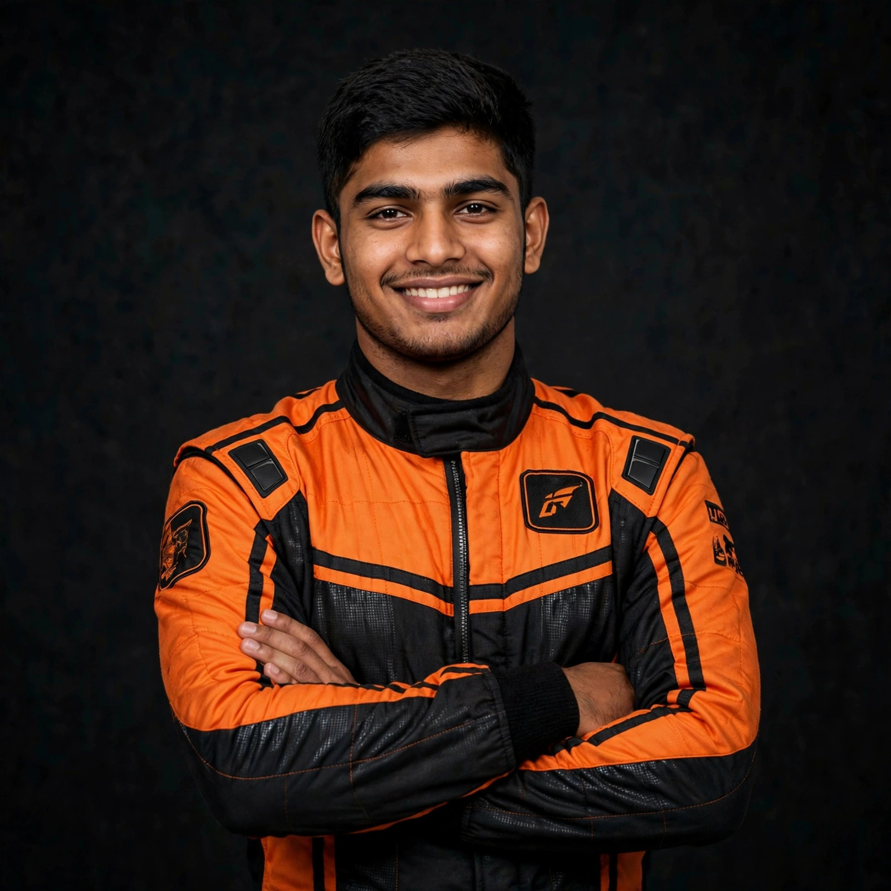

Padel Tennis
What started as off-season fitness turned into a full-blown obsession. Vasu plays weekly, hosts an annual charity padel night for young karters, and still claims his backhand smash is “basically a qualifying lap”.
Follow the matchesThe helmet comes off, but the curiosity doesn’t. Away from the circuit, Vasu builds, shoots, plays and competes at everything else life puts in front of him.
Partner campaigns shot in hotels and studios around the world, a padel obsession that started as recovery training, and a shelf of builds that keeps growing — this is the other half of the story.
What started as off-season fitness turned into a full-blown obsession. Vasu plays weekly, hosts an annual charity padel night for young karters, and still claims his backhand smash is “basically a qualifying lap”.
Follow the matches
A battered film camera travels to every race. The VASU.JPG series documents the paddock the way fans never see it — mechanics at 3am, empty grandstands at dawn, and the quiet minute before the visor goes down.
See the series
Every car Vasu has raced gets rebuilt in Lego — including a 1:8 scale replica of the championship-winning machine, assembled over one winter break. Engineering, just smaller and with more pieces lost under the sofa.
View the buildsThe slowest sport he plays, and somehow the most frustrating. A single-figure handicap is the target, a round under par is the dream — and the driver-versus-driver charity match is now a yearly tradition.
Follow the rounds